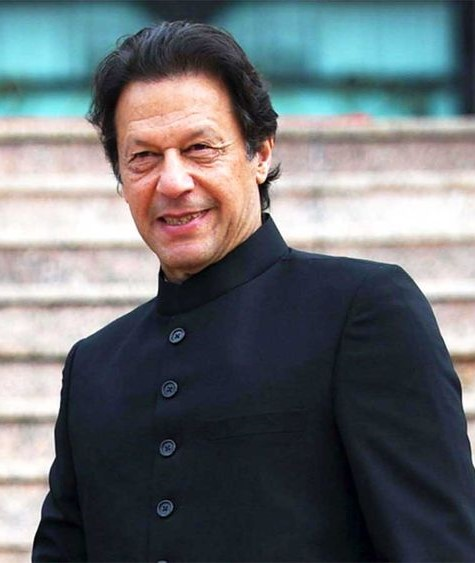

Born to an affluent family in Lahore and educated at Oxford University, Mr. Khan, 70, first rose to international prominence in the late 1970s on the cricket pitch. In 1995, he married a British heiress, Jemima Goldsmith. A year later, Mr. Khan tried to parlay his popularity from cricket — he had led Pakistan in 1992 to its only World Cup triumph — into a political career, establishing his own party, Pakistan Tehreek-e-Insaf, or the Movement for Justice. As a politician, he portrayed himself as a reformer offering an alternative to Pakistan’s entrenched political dynasties. For over a decade, Mr. Khan struggled to make political inroads and was mocked for his ambitions. By 2011, he began to gather political momentum, drawing hundreds of thousands of Pakistanis to his rallies. Many were energized by his populist, anticorruption and anti-American message. By then, Mr. Khan had embraced a pious form of Islam and sought to transform his personal image. In 2018, Mr. Khan got married for a third time, to his spiritual adviser, Bushra Bibi. (His marriage to Ms. Goldsmith had ended in divorce, and he was briefly married in 2015 to a broadcast journalist, Reham Khan.) After winning the backing of military leaders, Mr. Khan became prime minister in 2018. Many of his rivals accused the military of manipulating the election in his favor — an accusation Mr. Khan and the military have both denied. He ushered in a new foreign policy, moving away from the United States and closer to Russia and China. Mr. Khan’s relatively stable tenure began to unwind in 2021, as dissatisfaction with his handling of the economy came to a head and a dispute with the military over its leadership appeared to cost him its support. He was removed from office in a parliamentary no-confidence vote in April of last year. Tensions further mounted in November, when he was wounded during a political rally after a man opened fire on his convoy. Aides called it an assassination attempt.Since being removed from office, Mr. Khan has faced a series of charges, including for terrorism and corruption, and he has repeatedly faced threats of arrest after failing to appear in court. He has also openly challenged the government and military, accusing them of conspiring against him. Mr. Khan was arrested on corruption charges on Tuesday connected to a case involving the transfer of land for Al-Qadir University, near Islamabad. Mr. Khan has been accused of granting favors to Malik Riaz Hussain, a real estate tycoon, with the university getting land and donations in return.